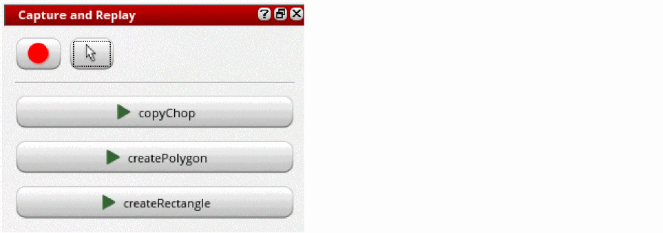
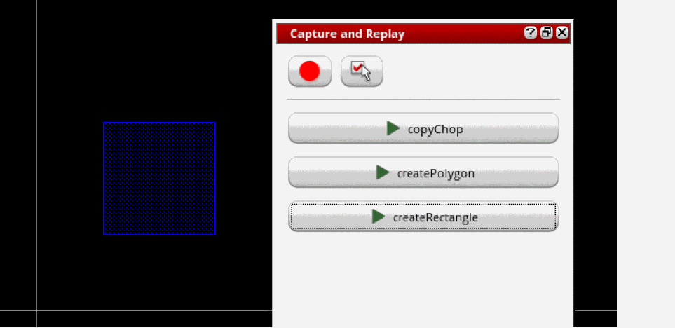

Replaying Your Recorded Actions in a Design
You can play a recording of your actions to repeat those actions in a design. You can replay the actions at the points saved in the recording or you can specify your starting point on the design canvas.
Replaying a Recording with Saved Points
To replay the actions at the points saved in a recording, in Layout EXL or a higher tier:
-
In your layout design, from the menu bar, choose Windows – Assistants – Capture and Replay.
The Capture and Replay assistant is displayed, listing existing recordings. You can hover the mouse pointer over a recording to see its brief description.
 - Optionally, view the details of the recording that you want to replay.
-
Click the recording that you want to replay.
The actions are performed in your design at the points that are saved in the recording.
Replaying a Recording with User-Entered Points
To replay the actions from a recording at a different starting point in a design, in Layout EXL or a higher tier:
-
In the Capture and Replay assistant, click the Replay recording with saved points button
 .
.
This is a toggle button, which now changes to Replay recording with user-entered points .
.
- Click the recording that you want to replay.
-
Click at the point on the canvas where you want the recorded actions to be performed.
The recorded actions are performed starting with the specified point in your design.

Related Topics
Capture and Replay Your Design Actions
Recording Your Actions in a Design
Deleting a Recording in the Capture and Replay Assistant
Return to top